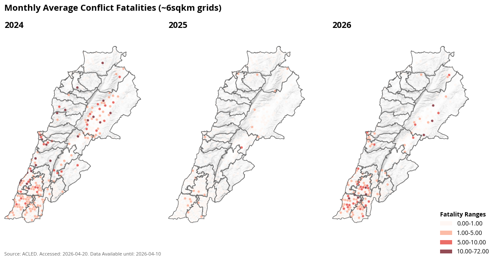
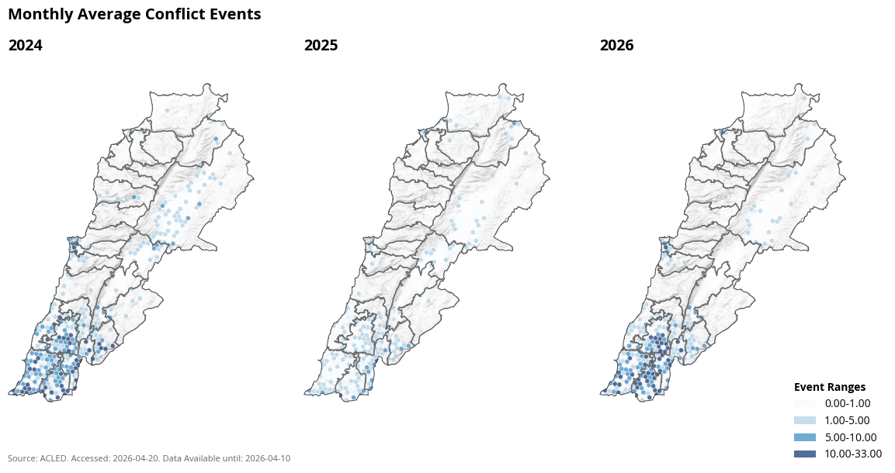
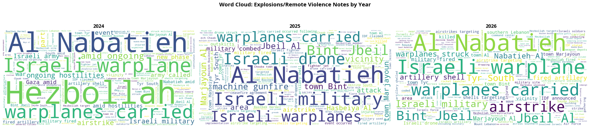

Conflict in Lebanon#
This notebook visualizes conflict and fatalities in Lebanon from October 7th 2023 to October 10th 2024.
Overview#
Conflict causes the reversal of short term and long term economic growth []. Within this analysis, we extract, and visualize the trend of conflict events and fatalities associated with conflict events in the Lebanon from 2012 to 2024.
Data#
Armed Conflict Location & Event Data#
The Armed Conflict Location & Event Data Project (ACLED) is a disaggregated data collection, analysis, and crisis mapping project. ACLED collects information on the dates, actors, locations, fatalities, and types of all reported political violence and protest events around the world. Access to this data is via a contract between the World bank and ACLED and can be extracted by any World Bank employee upon registering for an API key.
ACLED data is available for every day since 2016. The data is released with the exact latitude and longitude coordinates of the reported conflict event. The data is collected from four main types of sources - traditional media, reports, local partner data and new media (targeted and verified). ACLED researchers systematically cover thousands of distinct sources in over 75 languages. Sourcing lists are carefully curated and monitored to maintain accurate coverage. More about the methodology can be found in their codebook.
Every ACLED event is based on at least one source. The source names or acronyms are noted in the ‘Source’ column. With the exception of certain local sources that wish to remain anonymous, the ‘Source’ column details are sufficient to retrace the sources that have been used to record an event. All sources listed have contributed information to the event. Researchers often find multiple reports confirming details about an event; when multiple sources report on the same information, the most thorough, reliable, and recent report is cited. The ACLED team corrects some of their past entries as they get new information about the reported conflict.
Data prior to 2016 is not available for this specific country. The Data Lab team reached out to the ACLED team to understand why this is currently the case.
ACLED data contains 6 main types of conflict events - protests, riots, strategic developments, violence against civilians, battles and explosions/remote violence.
Methodology and Implementation#
ACLED data are analysed and aggregated to admin levels gathered from HdX. The number of fatalities and conflicts are then shown by different event types and different admin regions.
Following this, the data were mapped using both open source tools and Tableau.
You can find the processed files in the SharePoint folder
Findings#
Annual and Monthly Conflict Trends#
In the three months of 2026, there are already more than a 1000 fatalities in Lebanon.
The spike in fatalities is in March 2026.


The southern part of Lebanon saw a large number of dxaily attacks in March 2026 which is higher than 2025, and 2024 in some parts.
Conflict by Province#
df_prov = acled_adm1[acled_adm1["adm1_name"].isin(worst_fatalities_all_time)]
alt.Chart(df_prov).mark_bar(size=4, opacity=0.85, color="#34A7F2").encode(
x=alt.X("event_date:T", title=None, axis=alt.Axis(format="%Y", labelAngle=-45)),
y=alt.Y("nrEvents:Q", title="Events"),
tooltip=["event_date:T", "adm1_name:N", "nrEvents:Q"],
).properties(
width=200,
height=FACET_H,
).facet(
facet=alt.Facet("adm1_name:N", title=None),
columns=3,
title=alt.TitleParams(
text="Events in Most Affected Provinces",
subtitle=f"Source: ACLED. Accessed: {extracted_date}. Data Available until: {latest_available.strftime('%Y-%m-%d')}",
),
).configure_title(fontSize=13, fontWeight="bold", anchor="start"
).configure_header(
title=None,
labelFontWeight="bold",
labelAlign="left",
labelAnchor="start",
labelFontSize=12,
).configure_view(strokeWidth=0
).configure_axis(gridOpacity=0.3)
| adm1_name | nrEvents | nrFatalities | |
|---|---|---|---|
| 0 | South | 9225 | 2093 |
| 1 | El Nabatieh | 14688 | 2065 |
| 2 | Baalbek-El Hermel | 2542 | 1625 |
| 3 | Mount Lebanon | 3381 | 524 |
| 4 | Bekaa | 1876 | 324 |
| 5 | Beirut | 3091 | 157 |
There were a signigificantly high number of conflict events in Al Nabatieh, in souther Lebanon.
Conflict by Event Type#
What were the conflict events about?

Limitations#
ACLED is a crowdsourced dataset. Despite it being verified through local sources, it does not capture all the of the conflicts that occur in the region.
References#